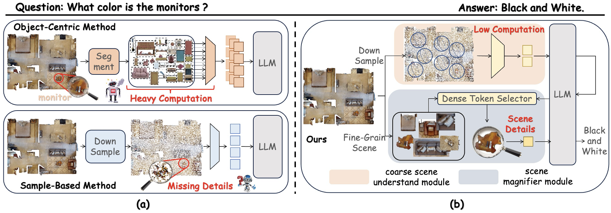
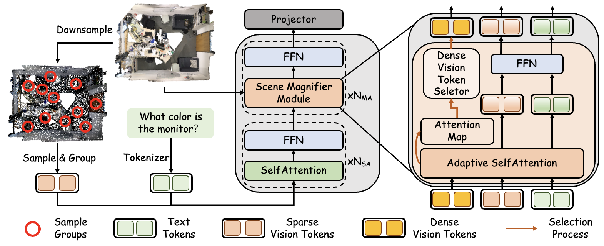
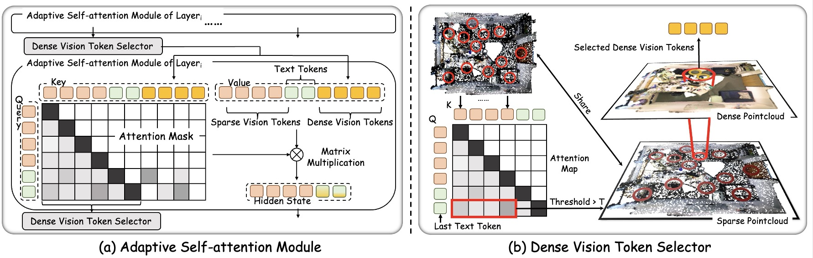
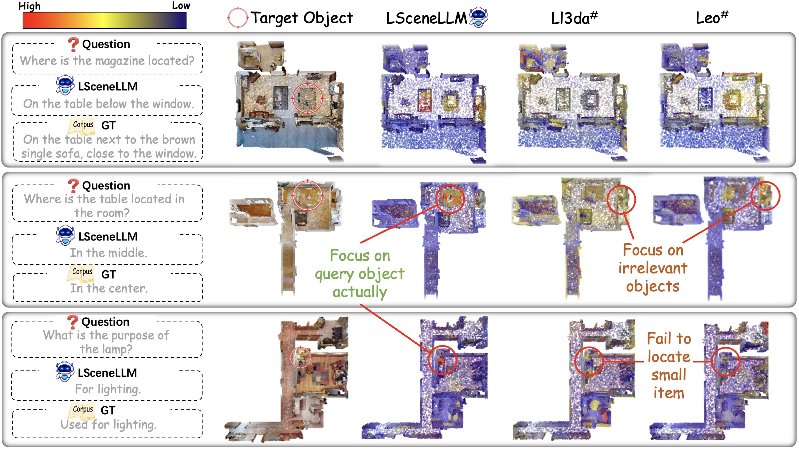

LSceneLLM
Empower Large 3D Scene Understanding with Hierarchical Modeling
Arxiv 2024
TL;DR: Hierarchical scene modeling allows effective large environment perception.
Overview
Research on 3D Vision-Language Models (3D-VLMs) is gaining increasing attention. Due to the high density of visual features in 3D scenes, there are still challenges in developing 3D-VLMs: 1) The sample-based approach results in a loss of detailed scene information due to aggressive downsampling. 2) The object-centric method demands dense features for each object from the entire scene, leading to a significant computational burden. To balance computational resources with preserving scene details, we propose LSceneLLM, a hierarchical framework that first performs region-level modeling for large scenes, followed by a plug-and-play scene magnifier module to capture fine-grained details in focused regions. To comprehensively evaluate the large scene understanding ability of 3D-VLMs, we further introduce a cross-room understanding benchmark, XR-Scene, which contains a series of scene understanding tasks including XR-QA, XR-EmbodiedPlanning, and XR-SceneCaption. The average scene size in XR-Scene is 132m^2, significantly larger than the 29m^2 of ScanQA. Experiments show that our method achieves remarkable results and surpasses existing methods on both large scene understanding and existing scene understanding benchmarks.
Proposed Method
The principle behind LSceneLLM is straightforward: rather than extracting all objects from a large scene to create visual features, we propose fisrt obtaining a coarse understanding of the entire scene, and dynamically selected dense scene details of focus region through scene magnifier module. Specifically, the raw scene point cloud is downsampled to produce a sparse version. These sparse vision tokens are concatenated with text tokens and fed into the LLM. The attention map generated by the LLM's self-attention module is then utilized to select a subset of important dense vision tokens.
This scene magnifier module includes two sub-modules: dense vision token selector and adaptive self-attention module. In dense vision token selector, regions that corresponding to the highest attention values are selected to obtain dense vision features, which are then sent to the adaptive self-attention module in the next layer. The adaptive self-attention module, which replaces the original self-attention module, computes the attention between the selected dense vision tokens, sparse vision tokens, and text tokens. This allows the model to focus on important regions in the large scene and efficiently obtain detailed information.
SOTA Comparison on Various 3D Understanding Benchmarks
Our approach consistently demonstrates superior performance in both indoor and outdoor large-scene under- standing, achieving outstanding results across a wide range of 3D understanding benchmarks.
Attention Map Visualization
We explore the areas the model focuses on when answering questions by visualizing the attention maps of the generated sequence of LLM to scene vision tokens. LSceneLLM can accurately identifies the position of question-related objects in large scene.
Web Site Hit Counters